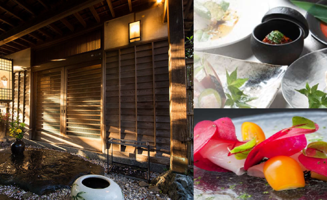
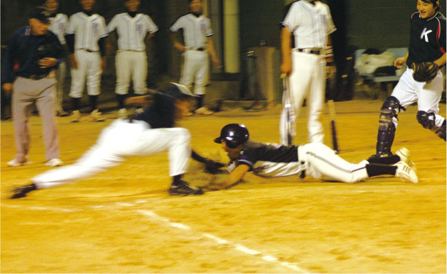

保育所
0歳児から安心してご利用できます。
『お子様を通じて社会貢献する』という理念のもと、お子様には、安全な環境の中で発達の保障（身体的発達・精神的発達）が得られるサービスを提供しています。ご両親には、「仕事」と「育児」の両立を支援します。
【所 在 地】 北九州市小倉北区浅野3丁目8番1号
アジア太平洋インポートマート流通センター棟4階
【施 設】 227.860㎡ 乳児室・幼児室・調乳室・トイレ・その他
【対象年齢】 生後９０日から未就学児
【保育時間】 月曜日〜土曜日 6:15〜21:00（月1回24時間保育）
※日祝日、年末年始（12/29〜1/3）は休園とします。
【保 育 料】 月極保育料
０歳児 30,000円／月
１〜２歳児 28,000円／月
３歳以上児 25,000円／月
一時預かり 2,000円／日(6:15〜21:00)
【定 員】 ２５名
【職 員】 保育士 １８名(ローテーション)
※保育児童数・年齢に応じたシフトにより、職員を増減します。
【嘱 託 医】 一般財団法人平成紫川会 小倉記念病院
【設 置 者】 一般財団法人平成紫川会
【管 理 者】 一般財団法人平成紫川会 株式会社テノ.コーポレーション
社員旅行
国内外日帰りお好きなプランを選べます
国内外の様々な場所へ職員旅行を実施しています。普段とは違う環境でリフレッシュし、仲間との絆を深めることができます。美しい海でアクティビティを楽しんだり、歴史的な街並みを散策したりと、思い出に残る旅を企画しています。

グループでの食事
美味しい食事で心を満たす
部署や職種を超えたグループで食事ができるプランを準備しています。仕事のことからプライベートのことまで、普段ゆっくり話すことが出来ないことを気軽に語り合える交流の場となっています。部署を超えた交流は、新たなアイデアを生み出すきっかけにもなります。

部活
仕事の後に仲間とリフレッシュ！
サッカー、バレーボール、バドミントンなど、様々な部活動が盛んに行われています。運動不足解消はもちろん、職種の垣根を越えて共に汗を流すことで、新たな絆が生まれます。また、地域医療機関との交流の場としても大きな役割を担い、文化部では、医療人としてだけでなく、一市民としての活動も行っています。
〔運動部〕野球部 ゴルフ部 バドミントン部 釣り部
バレーボール部 フットサル部 マラソン部 ダンス部
〔文化部〕写真部 祇園太鼓部